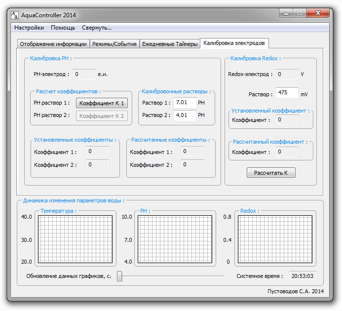

На текущей вкладке ПО AquaController 2014 отображаются текущие значения электродов PH и Redox-потенциала, значения калибровочных растворов, текущие коэффициенты, рассчитанные новые коэффициенты и элементы управления процессом калибровки.

Внешний вид вкладки "Калибровка электродов".
Для расчета коэффициентов калибровки PH-электрода используется уравнение прямой по двум точкам. Первая точка - значение электрода, соответствующее калибровочному раствору 1. Вторая точка соответственно - значение электрода, соответствующее калибровочному раствору 2. Для калибровки могут быть использованы любые растворы с различным PH.
Последовательность действий при калибровке PH-электрода:
- промойте электрод дистиллированной водой и аккуратно протрите салфеткой;
- опустите электрод в емкость с раствором 1 и подождите пока значение нормализуется;
- нажмите кнопку <Коэффициент К1> - контроллер запомнит текущее значение электрода;
- промойте электрод дистиллированной водой и аккуратно протрите салфеткой;
- опустите электрод в емкость с раствором 2 и подождите пока значение нормализуется;
- нажмите кнопку <Коэффициент К2> - контроллер запомнит текущее значение электрода, рассчитает необходимые коэффициенты, отобразит их в графе <Рассчитанные коэффициенты>, и текущее значение электрода будет отображено с учетом коэффициентов;
- погрузите электрод в аквариум.
Для расчета коэффициента калибровки Redox-электрода достаточно использовать одну точку, т.к. вторая точка всегда будет проходить через ноль.
Последовательность действий при калибровке Redox-электрода:
- промойте электрод дистиллированной водой и аккуратно протрите салфеткой;
- опустите электрод в емкость с раствором и подождите пока значение нормализуется;
- нажмите кнопку <Рассчитать К> - контроллер запомнит текущее значение электрода, рассчитает коэффициент, отобразит его в графе <Рассчитанный коэффициент>, и текущее значение электрода будет отображено с учетом коэффициента;
- погрузите электрод в аквариум.
Считывание коэффициентов в графу <Установленные коэффициенты/Установленный коэффициент> происходит при подключении к устройству, считывая текущие значения, либо же при неоднократной калибровке электродов - когда значения будут скопированы с графы <Рассчитанные коэффициенты/Рассчитанный коэффициент> при расчете новых коэффициентов.
После установки параметров нажмите кнопку <Записать EEPROM> на вкладке <Отображение информации>, для записи данных в энергонезависимую память контроллера.